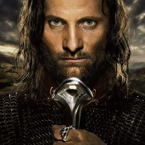
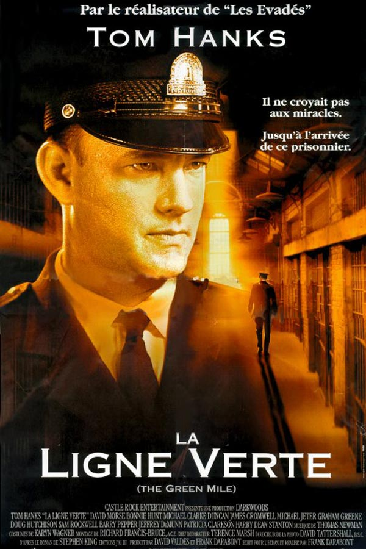

Ölmeden Önce Mutlaka İzlemeniz Gereken Film ve Diziler
Hayatanızda görüp görebileceğiniz en güzel dizi ve filmleri
sizin için derleyip bir sayfa halinde size sunuyorum ve izlemenizden keyif
alacağınızı garanti ediyorum
Gitmek istediğiniz dizi ve filmlerin üzerinde tıklayınız
Filmler
Diziler
Esaretin Bedeli
başa dön

Özet
Esaretin Bedeli, Andy ve Red isimli iki mahkumun parmaklıklar ardında kurdukları
dünyanın hikayesini anlatıyor. Andy Dufresne, genç ve başarılı bir bankerdir.
Karısını ve karısının sevgilisini öldürmek suçundan yargılanır ve ömür boyu
hapis cezası alır. Shawsank Hapishanesi'nde dayak, işkence, tecavüz, her türlü
durum yaşanmaktadır fakat Andy gene de hayata bağlı ve iyimserdir. Bu tutumu
etrafındakileri de etkiler. Andy umutlu bakış açısıyla çevresindeki tüm
mahkumları, parmaklıklar arkasında bile özgür bir yaşam olabileceğine inandırır.
Andy'nin bu çabalarına ortak olacak bir arkadaşı da olacaktır: Red.Bir Stephen
King uyarlaması olan filmde Morgan Freeman ve Tim Robbins başrolde. Film,
1995'te, aralarında en iyi film adaylığı da olmak üzere tam 7 dalda Oscar'a aday
gösterildi.
Yüzüklerin Efendisi
başa dön

Özet
Yüzüklerin Efendisi: Kralın Dönüşü, Tek Yüzük'ün yok edilmesi için verilen
mücadeleyi konu ediyor. Sauron'un orduları büyüdükçe büyümektedirler. Frodo ve
onun can dostu Sam, korku dolu bir yolculuğun göbeğinde, korkunç Mordor'a adım
adım yaklaşmaktadırlar. Tek yüzük yok edilmelidir ve iyilik bunun için savaşmaya
hazırdır. Arka planda ise insan, elf ve cüce orduları, karanlık güçlerin
karşısında tüm eski düşmanlıklarına rağmen bir araya gelmişlerdir. Hepsi birden
küçücük bir Hobbit'in eline ve onun yeteneklerine bakmaktadırlar. Orta Dünya'nın
kaderi belli olmak üzeredir. Ancak Tek Yüzük'ü sahiplenmek, kimi zaman
taşıyanına daha cazip gelebilir.
Yeşil Yol
başa dön

Özet
Yeşil Yol, bir hapishane görevlisi ile bir mahkumun öyküsünü anlatıyor. Paul
Edgecomb'un hapishanedeki görevi, idama mahkum edilen mahkumları son
yolculuklarına uğurlamaktır. Çalıştığı yıllar içerisinde yüzlerce mahkumu idam
etmiştir. Bir gün John Coffey isimli korkutucu görünümlü bir adamla tanışır.
Ancak Coffey'in bu ürkütücü görünümünün altında oldukça saf bir ruh yatmaktadır.
Coffey, iki küçük kız çocuğunun katil davasında yargılanmaktadır. Coffey'in
günden güne gün yüzüne çıkan dünya ötesi güçleri, karakteri hakkında yeni
ipuçlarını anbean ortaya çıkaracaktır.
Yüzüklerin Efendisi: Güç Yüzükleri

başa dön
Özet
J.R.R. Tolkien'in romanlarından esinlenen Yüzüklerin Efendisi: Güç Yüzükleri,
Orta Dünya'nın İkinci Çağı'na odaklanıyor ve Hobbit veya Yüzüklerin Efendisi
filmlerinden binlerce yıl öncesinde yaşananlara odaklanıyor. Göreceli bir barış
döneminden başlanan dizide, Dumanlı Dağlar'ın en karanlık derinliklerinden
Lindon'un görkemli ormanlarına, ada krallığı Numenor'dan, haritanın en uzak
noktalarına kadar tüm bu diyarların ve karakterlerin yarattığı destan
anlatılıyor.
Game of Thrones

başa dön
Özet
Krallık dediğin savaşsız olur mu? En güçlü krallığı kurup, huzuru sağlamış olsan
bile bu gücü elinde nasıl koruyacaksın? Burada yanlış yapana yer yok, affetmek
yok. Kuzey Krallığının hükümdarı Lord Ned Stark, uzun ve zorlu savaşlardan sonra
anayurduna dönüp krallığını bütünlük içerisinde tutmayı başarmıştır. Kral Robert
Baratheon ile yıllarca omuz omuza çarpışan ve Baratheon'un kral olmasını
sağlayan Ned Stark'ın tek istediği kuzey sınırlarını koruyan krallığında
ailesiyle ve halkıyla yaşamaktır.
Fakat suyun öte yanında kendi topraklarından ve krallığından kovulduğunu iddia
eden Viserys Targaryen , kız kardeşi Daenerys'i barbar kavimlerin başı Han
Drogo'ya vererek, güç birliği planları yapmaktadır. Tahtını büyük bir iştahla
geri isteyen ama kraliyet oyunlarından habersiz olan Viserys'in planları Kral
Baratheon'a ulaşır. Savaş alanında büyük cengaver olan ama ülke ve aile
yönetiminde aynı başarıyı tutturamayan Baratheon'un tamamen güvenebileceği ve
her yanlış hamlesini arkasından toplayacak yeni bir sağ kola ihtiyacı vardır.
Kuzeyin Lordu Ned Stark bu görev için seçilen tek aday isimdir. Kış
yaklaşıyor...
Hanedan entrikaları, kapılı kapılar ardında dönen oyunlar, birilerinin kuyusunu
kazmak için düşmanın koynuna girmekten çekinmeyen kadınlar, kardeşler arası
çekişmeler, dışlanmalar... Hepsi tek bir hedef için: taht kavgası...
The Witcher

başa dön
Özet
The Witcher'ın fantastik hikayesinde, yüzyılı aşkın süredir bir arada yaşayan
insanlar, cüceler ve elfler arasındaki barış sona erer ve yeni bir ırklar arası
savaş patlak verir. The Witcher olarak nam salan acımasız suikastçı Geralt of
Rivia, vaadedilen çocuğun doğumunu beklemektedir. Bu çocuk dünyanın tüm
dengesini değiştirecek güce sahiptir.
|
Sağ Taraf
|